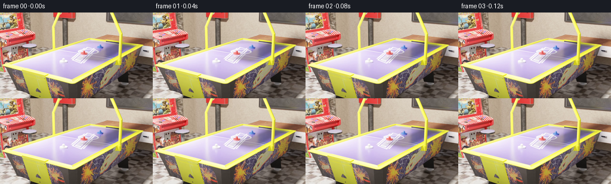
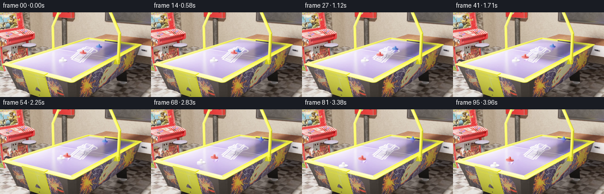
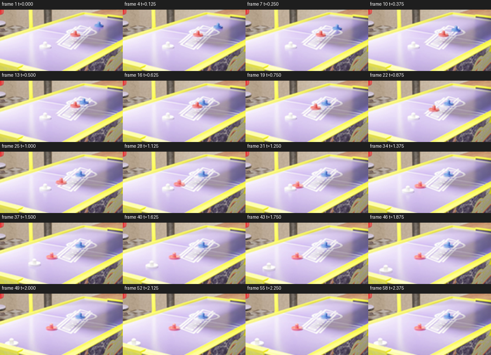
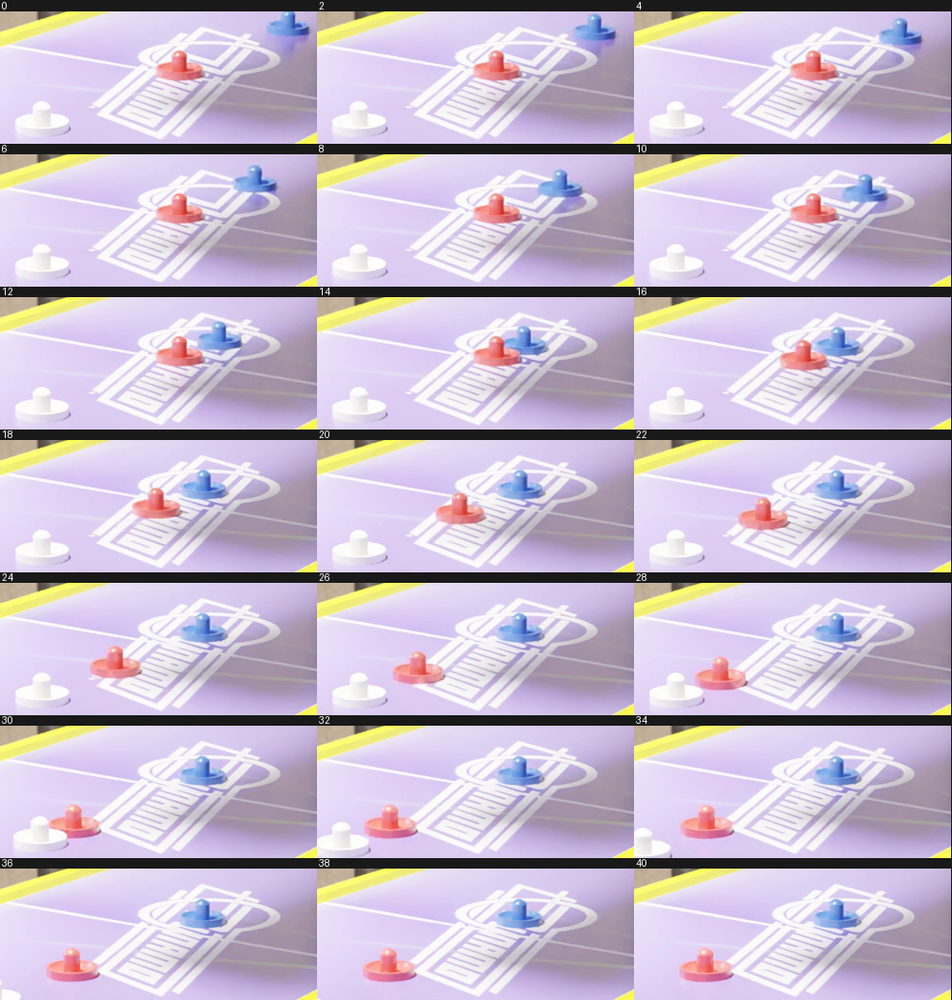
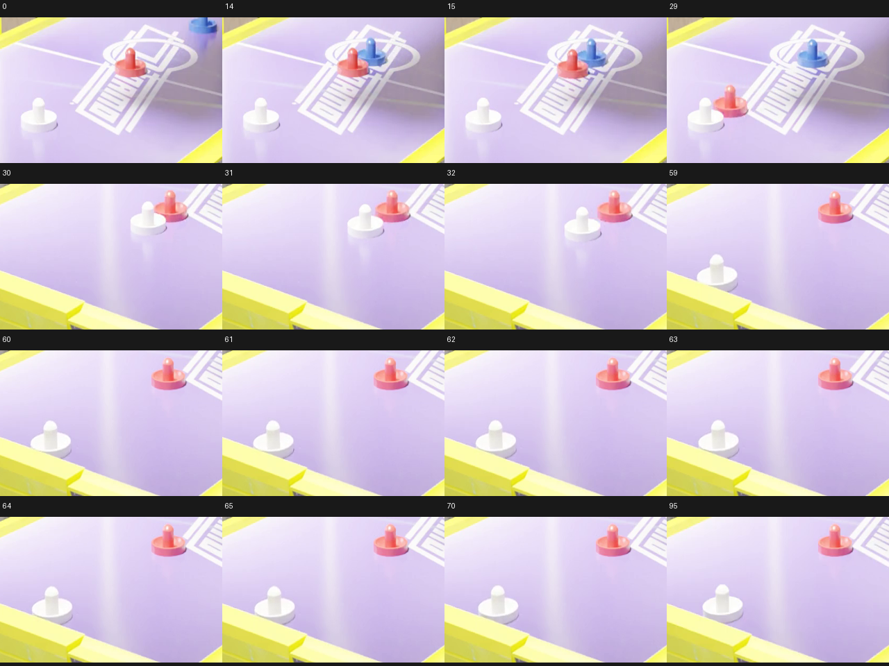
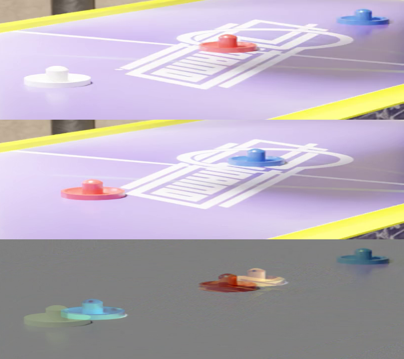
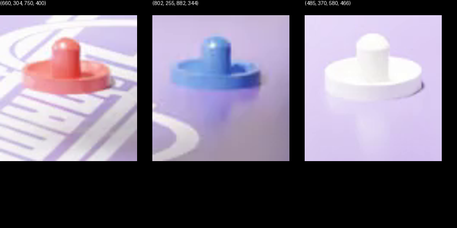
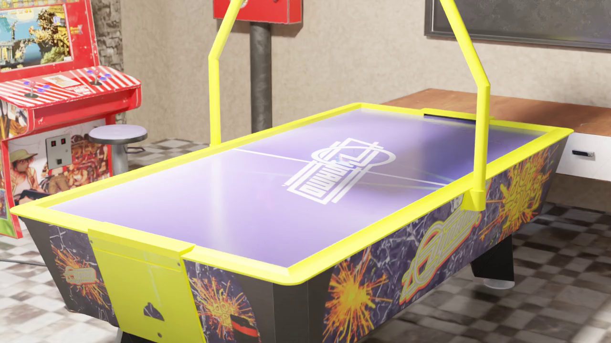
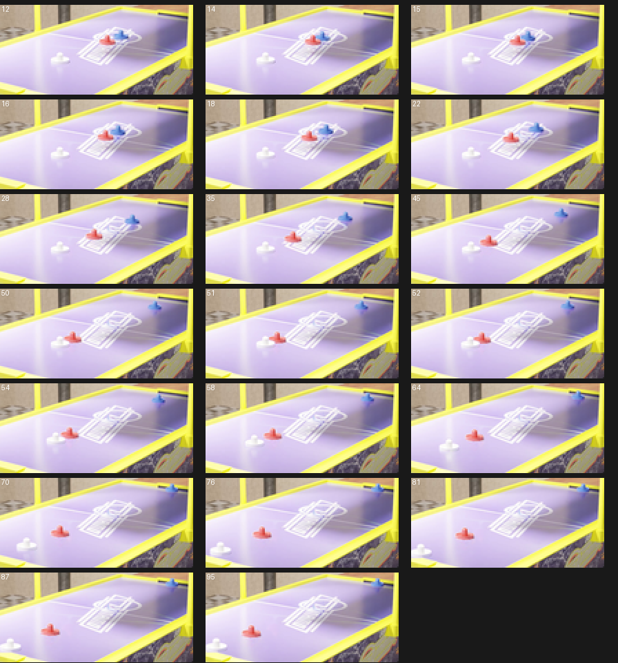

CODING AGENTS AS PIXEL WORLD MODELS
traex/GPT-6-Astra · pcve_0000
点击播放 · 原生 RGB 像素
编辑前的完整原视频
上方为编辑结果；原视频是模型获准使用的输入。下方为逐轮保存的编辑候选。
逐轮保存的候选
回放视频、检查图与代码变化。
每份候选均可单独播放。实际图片检查记录在下方工具轨迹中。
候选 01播放与检查图
点击播放 · 原生 RGB 像素


展开代码变化
--- 上一保存版本
+++ 本次保存版本
@@ -0,0 +1,221 @@
+"""Counterfactual mass edit, using source photography and planar rigid-body impulses.
+All processing is local. Mass changes from 1 to 4 without changing geometry.
+"""
+from pathlib import Path
+import cv2
+import numpy as np
+from PIL import Image
+import artifact_io
+
+ROOT=Path(__file__).resolve().parent
+
+def load_video():
+ cap=cv2.VideoCapture(str(ROOT/'source_video.mp4'))
+ frames=[]
+ while True:
+ ok,bgr=cap.read()
+ if not ok: break
+ frames.append(cv2.cvtColor(bgr,cv2.COLOR_BGR2RGB))
+ return np.asarray(frames)
+
+H=cv2.getPerspectiveTransform(np.float32([[745,226],[1156,274],[601,566],[58,436]]),np.float32([[0,0],[1,0],[1,2],[0,2]]))
+HI=np.linalg.inv(H)
+def to_world(p):
+ return cv2.perspectiveTransform(np.float32(p).reshape(1,-1,2),H)[0]
+def project(p):
+ return cv2.perspectiveTransform(np.float32(p).reshape(1,-1,2),HI)[0]
+def perspective_scale(p,p0):
+ return (HI[2]@np.r_[p0,1])/(HI[2]@np.r_[p,1])
+
+# Reference positions on the surface, in high resolution source pixels.
+centers=np.array([[839.,294.],[704.,348.2],[533.,416.5]]) # blue red white
+world0=to_world(centers)
+
+
+def track_sources(frames):
+ n=len(frames); tracks=np.zeros((n,3,2)); sizes=np.zeros((n,3))
+ yy,xx=np.mgrid[:720,:1280]
+ for i,f in enumerate(frames):
+ r,g,b=f.astype(np.float32).transpose(2,0,1)
+ roi=(yy>245)&(yy<450)&(xx>500)&(xx<910)
+ for k in [0,1]:
+ mask=(((b-r>45)&(g-r>15)&(r<145)) if k==0 else ((r-g>45)&(r-b>25)&(r>140)))&roi
+ nn,ll,st,cc=cv2.connectedComponentsWithStats(mask.astype(np.uint8))
+ j=1+np.argmax(st[1:,4]);x,y,w,h,_=st[j]
+ tracks[i,k]=[x+w/2,y+h-.14*w]
+ sizes[i,k]=w
+ # White source motion: masked template matching over a small local window.
+ template=frames[0,379:428,497:569]
+ mask=np.zeros((49,72),np.uint8)
+ cv2.ellipse(mask,(35,34),(33,12),0,0,360,255,-1)
+ cv2.rectangle(mask,(23,11),(45,31),255,-1)
+ cv2.ellipse(mask,(34,11),(11,8),0,0,360,255,-1)
+ prev=np.array([533.,403.5])
+ for i,f in enumerate(frames):
+ scale=1+(533-prev[0])*.00065
+ t=cv2.resize(template,None,fx=scale,fy=scale)
+ m=cv2.resize(mask,(t.shape[1],t.shape[0]))
+ x=max(200,int(prev[0]-60));y=int(prev[1]-45)
+ roi=f[y:y+95,x:x+120]
+ match=cv2.matchTemplate(roi,t,cv2.TM_CCORR_NORMED,mask=m)
+ _,_,_,pt=cv2.minMaxLoc(match)
+ prev=np.array([x+pt[0]+t.shape[1]/2,y+pt[1]+t.shape[0]/2])
+ tracks[i,2]=prev+[0,13*t.shape[1]/72]
+ sizes[i,2]=t.shape[1]*68/72
+ tracks[0]=centers
+ return tracks,sizes
+
+
+def occupancy(shape,points,widths):
+ mask=np.zeros(shape,np.uint8)
+ for k,(pt,w) in enumerate(zip(points,widths)):
+ x,y=pt
+ # Include solid object, contact shadow, and its faint glossy reflection.
+ rx=w*.7+5
+ pts=np.array([[x-rx,y-w*.76],[x+rx,y-w*.76],
+ [x+rx,y+w*.8],[x-rx,y+w*.8]],np.int32)
+ cv2.fillConvexPoly(mask,pts,255)
+ return mask
+
+
+def make_background(frames,tracks,sizes):
+ shape=frames.shape[1:3]
+ m0=occupancy(shape,tracks[0],sizes[0])
+ result=frames[0].copy()
+ missing=m0>0
+ # Choose actual observed table pixels, rather than synthesizing the logo.
+ for i in [95,60,40,28,20,12,8,4,0]+list(range(96)):
+ visible=occupancy(shape,tracks[i],sizes[i])==0
+ use=missing&visible
+ result[use]=frames[i][use]
+ missing[use]=False
+ # Only the tiny area hidden by both colliding bases is never observed.
+ if missing.any():
+ result=cv2.inpaint(result,missing.astype(np.uint8)*255,3,cv2.INPAINT_TELEA)
+ # Blend the outer background patch borders; preserve the exact scene elsewhere.
+ alpha=cv2.GaussianBlur((m0>0).astype(np.float32),(0,0),2)
+ alpha[m0>0]=1
+ result=np.clip(result*alpha[...,None]+frames[0]*(1-alpha[...,None]),0,255).astype(np.uint8)
+ return result
+
+
+def sprite_layers(frame,bg):
+ bounds=[(802,254,878,338),(662,305,746,396),(485,368,581,465)]
+ layers=[]
+ for k,(x0,y0,x1,y1) in enumerate(bounds):
+ rgb=frame[y0:y1,x0:x1].astype(np.float32)
+ base=bg[y0:y1,x0:x1].astype(np.float32)
+ r,g,b=rgb.transpose(2,0,1)
+ if k==0: m=(b-r>27)&(g-r>7)&(r<190)
+ elif k==1: m=(r-g>26)&(r-b>12)&(r>125)
+ else: m=(r>210)&(g>215)&(b>210)&(np.max(rgb,2)-np.min(rgb,2)<30)
+ # Restrict to the solid silhouette, excluding the reflection.
+ ys=np.arange(len(m))[:,None]+y0
+ m &= ys < [301,357,427][k]
+ n,l,st,c=cv2.connectedComponentsWithStats(m.astype(np.uint8))
+ j=1+np.argmax(st[1:,4]);m=(l==j).astype(np.uint8)
+ contours,_=cv2.findContours(m,cv2.RETR_EXTERNAL,cv2.CHAIN_APPROX_SIMPLE)
+ m[:]=0;cv2.drawContours(m,contours,-1,1,-1)
+ m=cv2.morphologyEx(m,cv2.MORPH_CLOSE,np.ones((3,3),np.uint8))
+ # Extend into the antialiased outer edge, leaving a 1px soft feather.
+ alpha=cv2.GaussianBlur(cv2.dilate(m,np.ones((3,3),np.uint8)).astype(np.float32),(0,0),.65)
+ # Photographic shadow and reflection residual, outside the opaque base.
+ residual=(rgb-base)*(1-alpha[...,None])
+ py,px=np.mgrid[y0:y1,x0:x1];cx,cy=centers[k]
+ w=[51,58,69][k]
+ envelope=np.exp(-(((px-cx)/(w*.5))**4+((py-(cy+9))/(w*.59))**4))
+ envelope*=np.clip((py-cy+7)/7,0,1)
+ residual*=envelope[...,None]
+ edge=np.minimum.reduce([px-x0+0.,x1-1-px,py-y0+0.,y1-1-py])
+ residual*=np.clip(edge/5,0,1)[...,None]
+ layers.append(dict(rgb=rgb,alpha=alpha,residual=residual,offset=np.array([x0,y0])))
+ return layers
+
+
+def dynamics():
+ # Mass units are arbitrary; only their ratio enters the impact law.
+ masses=np.array([1.,4.,1.]); radius=.0545
+ pos=world0[:,1].astype(float).copy()
+ vel=np.array([.6865,0.,0.])
+ dt=1/2400;steps=100
+ paths=[];events=[]
+ friction=.018
+ for frame in range(96):
+ paths.append(pos.copy())
+ if frame==95:break
+ for step in range(steps):
+ vel=np.sign(vel)*np.maximum(0,np.abs(vel)-friction*dt)
+ pos+=vel*dt
+ for a,b in [(0,1),(1,2),(0,2)]:
+ d=pos[b]-pos[a];normal=1 if d>=0 else -1
+ if abs(d)<2*radius and (vel[b]-vel[a])*normal<0:
+ # Equal-and-opposite impulse, restitution fitted to source.
+ e=.97
+ impulse=-(1+e)*(vel[b]-vel[a])*normal/(1/masses[a]+1/masses[b])
+ vel[a]-=impulse*normal/masses[a]
+ vel[b]+=impulse*normal/masses[b]
+ overlap=2*radius-abs(d)
+ pos[a]-=normal*overlap*masses[b]/(masses[a]+masses[b])
+ pos[b]+=normal*overlap*masses[a]/(masses[a]+masses[b])
+ events.append((frame+step/steps,a,b,vel.copy().tolist()))
+ # The same strongly damped rail contact visible in the source.
+ for k in range(3):
+ if pos[k]<radius:
+ pos[k]=radius
+ if vel[k]<0:vel[k]*=-.055
+ if pos[k]>2-radius:
+ pos[k]=2-radius
+ if vel[k]>0:vel[k]*=-.055
+ print('Counterfactual collision events:',events)
+ return np.array(paths)
+
+
+def render(bg,layers,paths,source_small):
+ frames=[]
+ for i in range(96):
+ # Intervention changes inertia immediately, not pre-contact trajectories.
+ if i<=14:
+ frames.append(source_small[i]);continue
+ canvas=bg.astype(np.float32).copy()
+ # Far-to-near rendering handles mallet occlusion at impact naturally.
+ for k in np.argsort(paths[i]):
+ p=world0[k].copy();p[1]=paths[i,k]
+ xy=project([p])[0]
+ scale=float(perspective_scale(p,world0[k]))
+ layer=layers[k]
+ offset=xy+(layer['offset']-centers[k])*scale
+ sh=layer['alpha'].shape
+ nw=max(1,round(sh[1]*scale));nh=max(1,round(sh[0]*scale))
+ ix=int(np.floor(offset[0]));iy=int(np.floor(offset[1]))
+ matrix=np.float32([[scale,0,offset[0]-ix],[0,scale,offset[1]-iy]])
+ sz=(nw+3,nh+3)
+ alpha=cv2.warpAffine(layer['alpha'],matrix,sz,flags=cv2.INTER_LINEAR)
+ # Premultiplication prevents background-color fringes in resampling.
+ color=cv2.warpAffine(layer['rgb']*layer['alpha'][...,None],matrix,sz,flags=cv2.INTER_LINEAR)
+ residual=cv2.warpAffine(layer['residual'],matrix,sz,flags=cv2.INTER_LINEAR)
+ if ix<0 or iy<0 or ix+sz[0]>1280 or iy+sz[1]>720:continue
+ target=canvas[iy:iy+sz[1],ix:ix+sz[0]]
+ target[:]=target*(1-alpha[...,None])+color+residual
+ out=Image.fromarray(np.clip(canvas,0,255).astype(np.uint8)).resize((256,144),Image.Resampling.LANCZOS)
+ frames.append(np.asarray(out))
+ return np.array(frames,dtype=np.uint8)
+
+
+def main():
+ source=load_video()
+ small=np.load(ROOT/'source_pixels.npz')['rgb']
+ tracks,sizes=track_sources(source)
+ bg=make_background(source,tracks,sizes)
+ layers=sprite_layers(source[0],bg)
+ paths=dynamics()
+ result=render(bg,layers,paths,small)
+ # Persist every complete candidate before inspecting or revising it.
+ artifact_io.save(result,ROOT)
+ writer=cv2.VideoWriter(str(ROOT/'edited_video.mp4'),cv2.VideoWriter_fourcc(*'mp4v'),24,(256,144))
+ for f in result:writer.write(cv2.cvtColor(f,cv2.COLOR_RGB2BGR))
+ writer.release()
+ Image.fromarray(bg).save(ROOT/'background_check.png')
+ np.save(ROOT/'counterfactual_paths.npy',paths)
+ print('Saved 96 RGB frames, 256x144 at 24 fps.')
+
+if __name__=='__main__':main()
候选 02播放与检查图
点击播放 · 原生 RGB 像素

展开代码变化
--- 上一保存版本
+++ 本次保存版本
@@ -70,11 +70,15 @@
mask=np.zeros(shape,np.uint8)
for k,(pt,w) in enumerate(zip(points,widths)):
x,y=pt
- # Include solid object, contact shadow, and its faint glossy reflection.
- rx=w*.7+5
- pts=np.array([[x-rx,y-w*.76],[x+rx,y-w*.76],
- [x+rx,y+w*.8],[x-rx,y+w*.8]],np.int32)
- cv2.fillConvexPoly(mask,pts,255)
+ def ellipse(cx,cy,rx,ry):
+ cv2.ellipse(mask,(round(cx),round(cy)),(max(1,round(rx)),max(1,round(ry))),0,0,360,255,-1)
+ # Exact compact silhouette of the disk and raised central handle.
+ ellipse(x,y-w*.05,w*.57+2,w*.19+2)
+ cv2.rectangle(mask,(round(x-w*.19-2),round(y-w*.43)),
+ (round(x+w*.19+2),round(y-w*.09)),255,-1)
+ ellipse(x,y-w*.44,w*.2+2,w*.125+2)
+ # Narrow, low-contrast vertical reflection below the contact point.
+ ellipse(x,y+w*.29,w*.30,w*.30)
return mask
候选 04播放与检查图
点击播放 · 原生 RGB 像素

展开代码变化
--- 上一保存版本
+++ 本次保存版本
@@ -83,23 +83,54 @@
def make_background(frames,tracks,sizes):
- shape=frames.shape[1:3]
- m0=occupancy(shape,tracks[0],sizes[0])
- result=frames[0].copy()
- missing=m0>0
- # Choose actual observed table pixels, rather than synthesizing the logo.
- for i in [95,60,40,28,20,12,8,4,0]+list(range(96)):
- visible=occupancy(shape,tracks[i],sizes[i])==0
- use=missing&visible
- result[use]=frames[i][use]
- missing[use]=False
- # Only the tiny area hidden by both colliding bases is never observed.
+ # Fuse unobstructed observations with per-frame color/silhouette exclusion.
+ # Target windows cover all original object pixels, shadows and reflections.
+ y0,y1,x0,x1=245,475,470,890
+ data=frames[:,y0:y1,x0:x1].astype(np.float32)
+ for i,f in enumerate(data):
+ r,g,b=f.transpose(2,0,1)
+ m=((b-r>25)&(g-r>5)&(r<190)) | ((r-g>25)&(r-b>10)&(r>125))
+ m=cv2.dilate(m.astype(np.uint8),np.ones((9,9),np.uint8))
+ for k in range(3):
+ x,y=tracks[i,k]-[x0,y0];w=sizes[i,k]
+ if k==2:
+ # White striker: full disk and stem, but not table logo.
+ cv2.ellipse(m,(round(x),round(y-w*.08)),(round(w*.59),round(w*.25)),0,0,360,1,-1)
+ cv2.rectangle(m,(round(x-w*.24),round(y-w*.64)),(round(x+w*.24),round(y-w*.09)),1,-1)
+ # Reflected object colors immediately below the table contact.
+ cv2.ellipse(m,(round(x),round(y+w*.25)),(round(w*.56),round(w*.44)),0,0,360,1,-1)
+ data[i][m>0]=np.nan
+ import warnings
+ with warnings.catch_warnings():
+ warnings.simplefilter('ignore')
+ patch=np.nanmedian(data,axis=0)
+ missing=np.isnan(patch[...,0])
+ patch=np.nan_to_num(patch).astype(np.uint8)
+ # Any persistently hidden region is filled using the bilateral logo design.
+ result=frames[0].copy();result[y0:y1,x0:x1]=patch
+ yy,xx=np.where(missing)
+ pp=to_world(np.stack([xx+x0,yy+y0],axis=1))
+ # The printed mark is centered on the longitudinal table midline.
+ pp[:,0]=1.0-pp[:,0]
+ mirror=project(pp)
+ mx=np.clip(np.round(mirror[:,0]).astype(int),0,1279)
+ my=np.clip(np.round(mirror[:,1]).astype(int),0,719)
+ good=(mx>=x0)&(mx<x1)&(my>=y0)&(my<y1)
+ good[good] &= ~missing[my[good]-y0,mx[good]-x0]
+ patch[yy[good],xx[good]]=result[my[good],mx[good]]
+ missing[yy[good],xx[good]]=False
if missing.any():
- result=cv2.inpaint(result,missing.astype(np.uint8)*255,3,cv2.INPAINT_TELEA)
- # Blend the outer background patch borders; preserve the exact scene elsewhere.
- alpha=cv2.GaussianBlur((m0>0).astype(np.float32),(0,0),2)
- alpha[m0>0]=1
- result=np.clip(result*alpha[...,None]+frames[0]*(1-alpha[...,None]),0,255).astype(np.uint8)
+ patch=cv2.inpaint(patch,missing.astype(np.uint8)*255,3,cv2.INPAINT_TELEA)
+ # Only edit original three striker neighborhoods. The surrounding photo is exact.
+ localmask=np.zeros(patch.shape[:2],np.float32)
+ for k,(cx,cy) in enumerate(centers):
+ w=[52,60,72][k]
+ xa=max(0,int(cx-x0-w*.72));xb=min(x1-x0,int(cx-x0+w*.72))
+ ya=max(0,int(cy-y0-w*.75));yb=min(y1-y0,int(cy-y0+w*.87))
+ localmask[ya:yb,xa:xb]=1
+ localmask=cv2.GaussianBlur(localmask,(0,0),2)
+ base=frames[0,y0:y1,x0:x1].astype(np.float32)
+ result[y0:y1,x0:x1]=np.clip(patch*localmask[...,None]+base*(1-localmask[...,None]),0,255)
return result
候选 05播放与检查图
点击播放 · 原生 RGB 像素

展开代码变化
代码未变化；重新保存了产物。
候选 06播放与检查图
点击播放 · 原生 RGB 像素
展开代码变化
--- 上一保存版本
+++ 本次保存版本
@@ -93,10 +93,10 @@
m=cv2.dilate(m.astype(np.uint8),np.ones((9,9),np.uint8))
for k in range(3):
x,y=tracks[i,k]-[x0,y0];w=sizes[i,k]
- if k==2:
- # White striker: full disk and stem, but not table logo.
- cv2.ellipse(m,(round(x),round(y-w*.08)),(round(w*.59),round(w*.25)),0,0,360,1,-1)
- cv2.rectangle(m,(round(x-w*.24),round(y-w*.64)),(round(x+w*.24),round(y-w*.09)),1,-1)
+ # Full opaque disk, sidewall, bright specular highlights and handle.
+ w *= [1.18,1.08,1.08][k]
+ cv2.ellipse(m,(round(x),round(y-w*.03)),(round(w*.61),round(w*.27)),0,0,360,1,-1)
+ cv2.rectangle(m,(round(x-w*.26),round(y-w*.67)),(round(x+w*.26),round(y-w*.06)),1,-1)
# Reflected object colors immediately below the table contact.
cv2.ellipse(m,(round(x),round(y+w*.25)),(round(w*.56),round(w*.44)),0,0,360,1,-1)
data[i][m>0]=np.nan
@@ -106,21 +106,20 @@
patch=np.nanmedian(data,axis=0)
missing=np.isnan(patch[...,0])
patch=np.nan_to_num(patch).astype(np.uint8)
- # Any persistently hidden region is filled using the bilateral logo design.
- result=frames[0].copy();result[y0:y1,x0:x1]=patch
- yy,xx=np.where(missing)
- pp=to_world(np.stack([xx+x0,yy+y0],axis=1))
- # The printed mark is centered on the longitudinal table midline.
- pp[:,0]=1.0-pp[:,0]
- mirror=project(pp)
- mx=np.clip(np.round(mirror[:,0]).astype(int),0,1279)
- my=np.clip(np.round(mirror[:,1]).astype(int),0,719)
- good=(mx>=x0)&(mx<x1)&(my>=y0)&(my<y1)
- good[good] &= ~missing[my[good]-y0,mx[good]-x0]
- patch[yy[good],xx[good]]=result[my[good],mx[good]]
- missing[yy[good],xx[good]]=False
+ result=frames[0].copy()
if missing.any():
patch=cv2.inpaint(patch,missing.astype(np.uint8)*255,3,cv2.INPAINT_TELEA)
+ # For the plain area left of the logo use the last unobstructed frame.
+ # The only overlap is a small edge of the red disk, repaired from neighbors.
+ clear=frames[95,y0:y1,x0:x1].copy()
+ r,g,b=clear.astype(float).transpose(2,0,1)
+ contam=((r-g>20)&(r-b>5)&(r>135)).astype(np.uint8)
+ contam=cv2.dilate(contam,np.ones((7,7),np.uint8))
+ plain=cv2.inpaint(clear,contam*255,5,cv2.INPAINT_TELEA)
+ wy,wx=np.mgrid[y0:y1,x0:x1]
+ # Match the low frequency surface lighting around the original white piece.
+ wm=np.exp(-(((wx-533)/49)**8+((wy-416)/59)**8))
+ patch=np.clip(patch*(1-wm[...,None])+plain*wm[...,None],0,255).astype(np.uint8)
# Only edit original three striker neighborhoods. The surrounding photo is exact.
localmask=np.zeros(patch.shape[:2],np.float32)
for k,(cx,cy) in enumerate(centers):
候选 07播放与检查图
候选 08播放与检查图
点击播放 · 原生 RGB 像素

展开代码变化
--- 上一保存版本
+++ 本次保存版本
@@ -120,6 +120,25 @@
# Match the low frequency surface lighting around the original white piece.
wm=np.exp(-(((wx-533)/49)**8+((wy-416)/59)**8))
patch=np.clip(patch*(1-wm[...,None])+plain*wm[...,None],0,255).astype(np.uint8)
+ # Recover the printed center mark with tighter measured silhouettes.
+ # Broad shadow masks must not hide recoverable edges of its white lines.
+ lx0,ly0,lx1,ly1=658,303,746,392
+ logo=frames[:,ly0:ly1,lx0:lx1].astype(np.float32)
+ for i in range(96):
+ full=frames[i,270:420,630:790].astype(np.float32)
+ r,g,b=full.transpose(2,0,1)
+ fg=(((b-r>27)&(g-r>7)&(r<190))|((r-g>24)&(r-b>10)&(r>125))).astype(np.uint8)
+ contours,_=cv2.findContours(fg,cv2.RETR_EXTERNAL,cv2.CHAIN_APPROX_SIMPLE)
+ cv2.drawContours(fg,contours,-1,1,-1)
+ fg=cv2.dilate(fg,np.ones((3,3),np.uint8))
+ fg=fg[ly0-270:ly1-270,lx0-630:lx1-630]
+ logo[i][fg>0]=np.nan
+ with warnings.catch_warnings():
+ warnings.simplefilter('ignore')
+ lp=np.nanmedian(logo,axis=0)
+ hole=np.isnan(lp[...,0]).astype(np.uint8)
+ lp=cv2.inpaint(np.nan_to_num(lp).astype(np.uint8),hole*255,3,cv2.INPAINT_TELEA)
+ patch[ly0-y0:ly1-y0,lx0-x0:lx1-x0]=lp
# Only edit original three striker neighborhoods. The surrounding photo is exact.
localmask=np.zeros(patch.shape[:2],np.float32)
for k,(cx,cy) in enumerate(centers):
候选 09播放与检查图
可观测工具轨迹
实际执行的命令与返回图片。
命令 1exit 0
/bin/bash -lc "ls -la && cat prompt.txt && printf '\\n---RULES---\\n' && cat GENERATION_RULES.md"
命令 2exit 0
/bin/bash -lc 'cat source_info.json && cat task_spec.json && cat artifact_io.py'
命令 3exit 0
/bin/bash -lc "python - <<'PY'
import numpy as np,cv2
from PIL import Image, ImageDraw
p=np.load('source_pixels.npz');print([(k,p[k].shape,p[k].dtype) for k in p.files])
a=p[p.files[0]]
print(cv2.VideoCapture('source_video.mp4').get(cv2.CAP_PROP_FRAME_COUNT))
s=Image.new('RGB',(768,6*240))
d=ImageDraw.Draw(s)
for k,i in enumerate(range(0,48,3)):
im=Image.fromarray(a[i]).crop((80,45,185,93)).resize((420,192))
# bigger complete top sections
im=Image.fromarray(a[i]).crop((55,40,195,110)).resize((384,192))
s.paste(im,((k%2)*384,(k//2)*0)) if False else None
# 4cols * 5rows
s=Image.new('RGB',(1120,5*162),(30,30,30));d=ImageDraw.Draw(s)
for k,i in enumerate(range(0,60,3)):
im=Image.fromarray(a[i]).crop((55,40,195,110)).resize((280,140))
x=k%4*280;y=k//4*162;s.paste(im,(x,y+22));d.text((x+4,y+3),f'frame {i+1} t={i/24:.3f}',fill='white')
s.save('motion_inspect.png')
v=cv2.VideoCapture('source_video.mp4'); ok,f=v.read();print(f.shape);cv2.imwrite('hi_first.png',f)
PY"命令 4exit 0
/bin/bash -lc "cat > analyze.py <<'PY'
import numpy as np,cv2
from PIL import Image,ImageDraw
v=cv2.VideoCapture('source_video.mp4'); frames=[]
while True:
ok,bgr=v.read()
if not ok:break
frames.append(cv2.cvtColor(bgr,cv2.COLOR_BGR2RGB))
a=np.array(frames)
tracks={}
for name in ['red','blue']:
pos=[]
for f in a:
r,g,b=f.astype(float).transpose(2,0,1)
roi=np.zeros(r.shape,bool);roi[245:475,350:925]=True
mask=((r-g>45)&(r-b>25)&(r>140)) if name=='red' else ((b-r>45)&(g-r>15)&(r<145))
mask=(mask&roi).astype('uint8')
n,l,st,c=cv2.connectedComponentsWithStats(mask)
k=1+np.argmax(st[1:,4]); x,y,w,h,area=st[k]; pos.append([x,y,w,h,area,*c[k]])
tracks[name]=np.array(pos)
np.savez('tracks.npz',**tracks)
for i in range(0,96,2):print(i, 'red', np.round(tracks['red'][i,[5,6]]/5,2), 'blue',np.round(tracks['blue'][i,[5,6]]/5,2))
s=Image.new('RGB',(1000,7*150),(25,25,25));d=ImageDraw.Draw(s)
for k,i in enumerate(range(0,42,2)):
im=Image.fromarray(a[i]).crop((480,270,875,435)).resize((333,139))
x=k%3*333;y=k//3*150;s.paste(im,(x,y+12));d.text((x+2,y),str(i),fill='white')
s.save('objects_inspect.png')
PY
python analyze.py"命令 5exit 0
/bin/bash -lc "python - <<'PY'
import cv2,numpy as np
v=cv2.VideoCapture('source_video.mp4'); a=[]
while 1:
ok,f=v.read()
if not ok:break
a.append(f[:,:,::-1])
a=np.array(a)
# Get white base centroid via bright distinct central color near known track position
for i in range(24,70):
f=a[i].astype(float);r,g,b=f.transpose(2,0,1)
# white object lies lower left of logo
mask=(r>220)&(g>225)&(b>215)&(np.maximum.reduce([r,g,b])-np.minimum.reduce([r,g,b])<25)
roi=np.zeros(mask.shape,bool);roi[380:550,260:570]=True
mask=(mask&roi).astype('uint8')
n,l,s,c=cv2.connectedComponentsWithStats(mask)
k=1+np.argmax(s[1:,4]);print(i,np.round(c[k]/5,3),s[k,:4]/5)
PY"命令 6exit 0
/bin/bash -lc "python - <<'PY'
import cv2,numpy as np
from PIL import Image,ImageDraw
v=cv2.VideoCapture('source_video.mp4'); fs=[]
for i in range(96):
ret,f=v.read()
if i in [0,14,15,29,30,31,32,59,60,61,62,63,64,65,70,95]:fs.append((i,f[:,:,::-1]))
s=Image.new('RGB',(4*320,4*240),(25,25,25));d=ImageDraw.Draw(s)
for k,(i,f) in enumerate(fs):
if k>=16:break
if k<4:box=(460,280,875,465)
else:box=(250,360,670,550)
im=Image.fromarray(f).crop(box).resize((320,210));x=k%4*320;y=k//4*240;s.paste(im,(x,y+25));d.text((x+4,y+3),str(i),fill='white')
s.save('more_inspect.png')
PY"命令 7exit 0
/bin/bash -lc "python - <<'PY'
import cv2,numpy as np
p=np.float32([[745,226],[1156,274],[601,566],[58,436]])
h=cv2.getPerspectiveTransform(p,np.float32([[0,0],[1,0],[1,2],[0,2]]))
for name,arr in [('initial',[[839,295],[704,350],[533,418]]),('col1',[[734,336],[704,350]]),('col2',[[575,404],[533,418]])]:
a=cv2.perspectiveTransform(np.float32(arr)[None],h)[0]; print(name,a)
PY"命令 8exit 0
/bin/bash -lc "python - <<'PY'
import cv2,numpy as np
from PIL import Image
v=cv2.VideoCapture('source_video.mp4');_,f=v.read();f=f[:,:,::-1];a=np.load('source_pixels.npz')['rgb'][0]
for typ in [cv2.INTER_AREA,cv2.INTER_LINEAR,cv2.INTER_CUBIC]:
r=cv2.resize(f,(256,144),interpolation=typ);print(typ,np.mean(abs(a.astype(float)-r)),np.max(abs(a.astype(float)-r)))
for typ in [Image.Resampling.LANCZOS,Image.Resampling.BICUBIC]:
r=np.array(Image.fromarray(f).resize((256,144),typ));print(typ,np.mean(abs(a.astype(float)-r)))
PY"命令 9exit 0
/bin/bash -lc "python - <<'PY'
import numpy as np,cv2
tr=np.load('tracks.npz');
H=cv2.getPerspectiveTransform(np.float32([[745,226],[1156,274],[601,566],[58,436]]),np.float32([[0,0],[1,0],[1,2],[0,2]]))
for name in ['red','blue']:
a=tr[name];ground=np.stack([a[:,0]+a[:,2]/2,a[:,1]+a[:,3]-.14*a[:,2]],1);xy=cv2.perspectiveTransform(ground.astype(np.float32)[None],H)[0]
print(name)
for i in [0,1,5,10,12,13,14,15,16,17,18,20,25,28,29,30,31,32,40,60,95]:print(i,a[i,:4],np.round(ground[i],2),np.round(xy[i],4))
PY"命令 10exit 0
/bin/bash -lc "cat > white_track.py <<'PY'
import numpy as np,cv2
v=cv2.VideoCapture('source_video.mp4');pos=[];prev=np.array([533,405])
for i in range(96):
ok,f=v.read();r,g,b=f[:,:,::-1].astype(float).transpose(2,0,1)
mask=(r>195)&(g>205)&(b>205)&(np.maximum.reduce([r,g,b])-np.minimum.reduce([r,g,b])<28)
roi=np.zeros(mask.shape,bool);roi[365:550,250:595]=True
mask=(mask&roi).astype('uint8')
n,l,s,c=cv2.connectedComponentsWithStats(mask)
ks=[k for k in range(1,n) if s[k,4]>100]
k=min(ks,key=lambda k:np.linalg.norm(c[k]-prev));prev=c[k]
x,y,w,h,area=s[k];pos.append([x,y,w,h,area,*c[k]])
p=np.array(pos);tr=dict(np.load('tracks.npz'));tr['white']=p;np.savez('tracks.npz',**tr)
H=cv2.getPerspectiveTransform(np.float32([[745,226],[1156,274],[601,566],[58,436]]),np.float32([[0,0],[1,0],[1,2],[0,2]]))
ground=np.stack([p[:,0]+p[:,2]/2,p[:,1]+p[:,3]-.14*p[:,2]],1);xy=cv2.perspectiveTransform(ground.astype(np.float32)[None],H)[0]
for i in range(0,96,2):print(i,np.round(ground[i]/5,3),np.round(xy[i],4))
PY
python white_track.py"命令 11exit 0
/bin/bash -lc "cat > inspect_track.py <<'PY'
import cv2,numpy as np
from PIL import Image,ImageDraw
v=cv2.VideoCapture('source_video.mp4');fs=[]
for i in range(96):_,f=v.read();fs.append(f[:,:,::-1])
f0=fs[0];template=f0[379:428,497:569];mask=np.zeros((49,72),np.uint8);cv2.ellipse(mask,(35,34),(33,12),0,0,360,255,-1);cv2.rectangle(mask,(23,11),(45,31),255,-1);cv2.ellipse(mask,(34,11),(11,8),0,0,360,255,-1)
prev=np.array([533.,403.]);tr=[]
for i,f in enumerate(fs):
scale=1+(533-prev[0])*.00065
t=cv2.resize(template,None,fx=scale,fy=scale);m=cv2.resize(mask,(t.shape[1],t.shape[0]));x=max(200,int(prev[0]-60));y=int(prev[1]-45);roi=f[y:y+95,x:x+120]
result=cv2.matchTemplate(roi,t,cv2.TM_CCORR_NORMED,mask=m)
_,val,_,pt=cv2.minMaxLoc(result); prev=np.array([x+pt[0]+t.shape[1]/2,y+pt[1]+t.shape[0]/2]);tr.append([*prev,t.shape[1],t.shape[0],val]);
print(i,np.round(tr[-1],3)) if i>=28 else None
np.save('white_track.npy',tr)
PY
python inspect_track.py"命令 12exit 0
/bin/bash -lc "python - <<'PY'
import cv2,numpy as np
from PIL import Image,ImageDraw
v=cv2.VideoCapture('source_video.mp4');fs=[]
while 1:
ok,f=v.read()
if not ok:break
fs.append(f[:,:,::-1])
a=fs[0];b=fs[75]
x0,y0,x1,y1=475,250,880,490
out=Image.new('RGB',(810,720));
for k,im in enumerate([a,b,np.clip((a.astype(float)-b)/1.5+128,0,255).astype('uint8')]):out.paste(Image.fromarray(im[y0:y1,x0:x1]).resize((810,240)),(0,k*240))
out.save('diff_inspect.png')
PY"命令 13exit 0
/bin/bash -lc "python - <<'PY'
import numpy as np,cv2
H=cv2.getPerspectiveTransform(np.float32([[745,226],[1156,274],[601,566],[58,436]]),np.float32([[0,0],[1,0],[1,2],[0,2]]))
p=np.load('white_track.npy');s=p[:,2]/72;ground=p[:,:2]+s[:,None]*[0,13];xy=cv2.perspectiveTransform(ground.astype(np.float32)[None],H)[0]
for i in [0,29,30,32,36,40,44,47,48,50,60,95]:print(i,ground[i],xy[i])
PY"命令 14exit 0
/bin/bash -lc "python - <<'PY'
from PIL import Image,ImageDraw
im=Image.open('hi_first.png');crops=[(660,304,750,400),(802,255,882,344),(485,370,580,466)]
s=Image.new('RGB',(900,450));d=ImageDraw.Draw(s)
for i,b in enumerate(crops):
c=im.crop(b).resize((270,288));s.paste(c,(300*i,30));d.text((300*i,0),str(b),fill='white')
s.save('sprite_inspect.png')
PY"命令 15exit 0
/bin/bash -lc "cat > generate.py <<'PY'
\"\"\"Counterfactual mass edit, using source photography and planar rigid-body impulses.
All processing is local. Mass changes from 1 to 4 without changing geometry.
\"\"\"
from pathlib import Path
import cv2
import numpy as np
from PIL import Image
import artifact_io
ROOT=Path(__file__).resolve().parent
def load_video():
cap=cv2.VideoCapture(str(ROOT/'source_video.mp4'))
frames=[]
while True:
ok,bgr=cap.read()
if not ok: break
frames.append(cv2.cvtColor(bgr,cv2.COLOR_BGR2RGB))
return np.asarray(frames)
H=cv2.getPerspectiveTransform(np.float32([[745,226],[1156,274],[601,566],[58,436]]),np.float32([[0,0],[1,0],[1,2],[0,2]]))
HI=np.linalg.inv(H)
def to_world(p):
return cv2.perspectiveTransform(np.float32(p).reshape(1,-1,2),H)[0]
def project(p):
return cv2.perspectiveTransform(np.float32(p).reshape(1,-1,2),HI)[0]
def perspective_scale(p,p0):
return (HI[2]@np.r_[p0,1])/(HI[2]@np.r_[p,1])
# Reference positions on the surface, in high resolution source pixels.
centers=np.array([[839.,294.],[704.,348.2],[533.,416.5]]) # blue red white
world0=to_world(centers)
def track_sources(frames):
n=len(frames); tracks=np.zeros((n,3,2)); sizes=np.zeros((n,3))
yy,xx=np.mgrid[:720,:1280]
for i,f in enumerate(frames):
r,g,b=f.astype(np.float32).transpose(2,0,1)
roi=(yy>245)&(yy<450)&(xx>500)&(xx<910)
for k in [0,1]:
mask=(((b-r>45)&(g-r>15)&(r<145)) if k==0 else ((r-g>45)&(r-b>25)&(r>140)))&roi
nn,ll,st,cc=cv2.connectedComponentsWithStats(mask.astype(np.uint8))
j=1+np.argmax(st[1:,4]);x,y,w,h,_=st[j]
tracks[i,k]=[x+w/2,y+h-.14*w]
sizes[i,k]=w
# White source motion: masked template matching over a small local window.
template=frames[0,379:428,497:569]
mask=np.zeros((49,72),np.uint8)
cv2.ellipse(mask,(35,34),(33,12),0,0,360,255,-1)
cv2.rectangle(mask,(23,11),(45,31),255,-1)
cv2.ellipse(mask,(34,11),(11,8),0,0,360,255,-1)
prev=np.array([533.,403.5])
for i,f in enumerate(frames):
scale=1+(533-prev[0])*.00065
t=cv2.resize(template,None,fx=scale,fy=scale)
m=cv2.resize(mask,(t.shape[1],t.shape[0]))
x=max(200,int(prev[0]-60));y=int(prev[1]-45)
roi=f[y:y+95,x:x+120]
match=cv2.matchTemplate(roi,t,cv2.TM_CCORR_NORMED,mask=m)
_,_,_,pt=cv2.minMaxLoc(match)
prev=np.array([x+pt[0]+t.shape[1]/2,y+pt[1]+t.shape[0]/2])
tracks[i,2]=prev+[0,13*t.shape[1]/72]
sizes[i,2]=t.shape[1]*68/72
tracks[0]=centers
return tracks,sizes
def occupancy(shape,points,widths):
mask=np.zeros(shape,np.uint8)
for k,(pt,w) in enumerate(zip(points,widths)):
x,y=pt
# Include solid object, contact shadow, and its faint glossy reflection.
rx=w*.7+5
pts=np.array([[x-rx,y-w*.76],[x+rx,y-w*.76],
[x+rx,y+w*.8],[x-rx,y+w*.8]],np.int32)
cv2.fillConvexPoly(mask,pts,255)
return mask
def make_background(frames,tracks,sizes):
shape=frames.shape[1:3]
m0=occupancy(shape,tracks[0],sizes[0])
result=frames[0].copy()
missing=m0>0
# Choose actual observed table pixels, rather than synthesizing the logo.
for i in [95,60,40,28,20,12,8,4,0]+list(range(96)):
visible=occupancy(shape,tracks[i],sizes[i])==0
use=missing&visible
result[use]=frames[i][use]
missing[use]=False
# Only the tiny area hidden by both colliding bases is never observed.
if missing.any():
result=cv2.inpaint(result,missing.astype(np.uint8)*255,3,cv2.INPAINT_TELEA)
# Blend the outer background patch borders; preserve the exact scene elsewhere.
alpha=cv2.GaussianBlur((m0>0).astype(np.float32),(0,0),2)
alpha[m0>0]=1
result=np.clip(result*alpha[...,None]+frames[0]*(1-alpha[...,None]),0,255).astype(np.uint8)
return result
def sprite_layers(frame,bg):
bounds=[(802,254,878,338),(662,305,746,396),(485,368,581,465)]
layers=[]
for k,(x0,y0,x1,y1) in enumerate(bounds):
rgb=frame[y0:y1,x0:x1].astype(np.float32)
base=bg[y0:y1,x0:x1].astype(np.float32)
r,g,b=rgb.transpose(2,0,1)
if k==0: m=(b-r>27)&(g-r>7)&(r<190)
elif k==1: m=(r-g>26)&(r-b>12)&(r>125)
else: m=(r>210)&(g>215)&(b>210)&(np.max(rgb,2)-np.min(rgb,2)<30)
# Restrict to the solid silhouette, excluding the reflection.
ys=np.arange(len(m))[:,None]+y0
m &= ys < [301,357,427][k]
n,l,st,c=cv2.connectedComponentsWithStats(m.astype(np.uint8))
j=1+np.argmax(st[1:,4]);m=(l==j).astype(np.uint8)
contours,_=cv2.findContours(m,cv2.RETR_EXTERNAL,cv2.CHAIN_APPROX_SIMPLE)
m[:]=0;cv2.drawContours(m,contours,-1,1,-1)
m=cv2.morphologyEx(m,cv2.MORPH_CLOSE,np.ones((3,3),np.uint8))
# Extend into the antialiased outer edge, leaving a 1px soft feather.
alpha=cv2.GaussianBlur(cv2.dilate(m,np.ones((3,3),np.uint8)).astype(np.float32),(0,0),.65)
# Photographic shadow and reflection residual, outside the opaque base.
residual=(rgb-base)*(1-alpha[...,None])
py,px=np.mgrid[y0:y1,x0:x1];cx,cy=centers[k]
w=[51,58,69][k]
envelope=np.exp(-(((px-cx)/(w*.5))**4+((py-(cy+9))/(w*.59))**4))
envelope*=np.clip((py-cy+7)/7,0,1)
residual*=envelope[...,None]
edge=np.minimum.reduce([px-x0+0.,x1-1-px,py-y0+0.,y1-1-py])
residual*=np.clip(edge/5,0,1)[...,None]
layers.append(dict(rgb=rgb,alpha=alpha,residual=residual,offset=np.array([x0,y0])))
return layers
def dynamics():
# Mass units are arbitrary; only their ratio enters the impact law.
masses=np.array([1.,4.,1.]); radius=.0545
pos=world0[:,1].astype(float).copy()
vel=np.array([.6865,0.,0.])
dt=1/2400;steps=100
paths=[];events=[]
friction=.018
for frame in range(96):
paths.append(pos.copy())
if frame==95:break
for step in range(steps):
vel=np.sign(vel)*np.maximum(0,np.abs(vel)-friction*dt)
pos+=vel*dt
for a,b in [(0,1),(1,2),(0,2)]:
d=pos[b]-pos[a];normal=1 if d>=0 else -1
if abs(d)<2*radius and (vel[b]-vel[a])*normal<0:
# Equal-and-opposite impulse, restitution fitted to source.
e=.97
impulse=-(1+e)*(vel[b]-vel[a])*normal/(1/masses[a]+1/masses[b])
vel[a]-=impulse*normal/masses[a]
vel[b]+=impulse*normal/masses[b]
overlap=2*radius-abs(d)
pos[a]-=normal*overlap*masses[b]/(masses[a]+masses[b])
pos[b]+=normal*overlap*masses[a]/(masses[a]+masses[b])
events.append((frame+step/steps,a,b,vel.copy().tolist()))
# The same strongly damped rail contact visible in the source.
for k in range(3):
if pos[k]<radius:
pos[k]=radius
if vel[k]<0:vel[k]*=-.055
if pos[k]>2-radius:
pos[k]=2-radius
if vel[k]>0:vel[k]*=-.055
print('Counterfactual collision events:',events)
return np.array(paths)
def render(bg,layers,paths,source_small):
frames=[]
for i in range(96):
# Intervention changes inertia immediately, not pre-contact trajectories.
if i<=14:
frames.append(source_small[i]);continue
canvas=bg.astype(np.float32).copy()
# Far-to-near rendering handles mallet occlusion at impact naturally.
for k in np.argsort(paths[i]):
p=world0[k].copy();p[1]=paths[i,k]
xy=project([p])[0]
scale=float(perspective_scale(p,world0[k]))
layer=layers[k]
offset=xy+(layer['offset']-centers[k])*scale
sh=layer['alpha'].shape
nw=max(1,round(sh[1]*scale));nh=max(1,round(sh[0]*scale))
ix=int(np.floor(offset[0]));iy=int(np.floor(offset[1]))
matrix=np.float32([[scale,0,offset[0]-ix],[0,scale,offset[1]-iy]])
sz=(nw+3,nh+3)
alpha=cv2.warpAffine(layer['alpha'],matrix,sz,flags=cv2.INTER_LINEAR)
# Premultiplication prevents background-color fringes in resampling.
color=cv2.warpAffine(layer['rgb']*layer['alpha'][...,None],matrix,sz,flags=cv2.INTER_LINEAR)
residual=cv2.warpAffine(layer['residual'],matrix,sz,flags=cv2.INTER_LINEAR)
if ix<0 or iy<0 or ix+sz[0]>1280 or iy+sz[1]>720:continue
target=canvas[iy:iy+sz[1],ix:ix+sz[0]]
target[:]=target*(1-alpha[...,None])+color+residual
out=Image.fromarray(np.clip(canvas,0,255).astype(np.uint8)).resize((256,144),Image.Resampling.LANCZOS)
frames.append(np.asarray(out))
return np.array(frames,dtype=np.uint8)
def main():
source=load_video()
small=np.load(ROOT/'source_pixels.npz')['rgb']
tracks,sizes=track_sources(source)
bg=make_background(source,tracks,sizes)
layers=sprite_layers(source[0],bg)
paths=dynamics()
result=render(bg,layers,paths,small)
# Persist every complete candidate before inspecting or revising it.
artifact_io.save(result,ROOT)
writer=cv2.VideoWriter(str(ROOT/'edited_video.mp4'),cv2.VideoWriter_fourcc(*'mp4v'),24,(256,144))
for f in result:writer.write(cv2.cvtColor(f,cv2.COLOR_RGB2BGR))
writer.release()
Image.fromarray(bg).save(ROOT/'background_check.png')
np.save(ROOT/'counterfactual_paths.npy',paths)
print('Saved 96 RGB frames, 256x144 at 24 fps.')
if __name__=='__main__':main()
PY
OPENBLAS_NUM_THREADS=1 python generate.py"命令 16exit 0
/bin/bash -lc "cp -r frames candidate_01_frames && cp pixels.npz candidate_01_pixels.npz && cp inspection.png candidate_01_inspection.png
python - <<'PY'
p='generate.py'
s=open(p).read();start=s.index('def occupancy(');end=s.index('\\n\\ndef make_background',start)
s=s[:start]+'''def occupancy(shape,points,widths):
mask=np.zeros(shape,np.uint8)
for k,(pt,w) in enumerate(zip(points,widths)):
x,y=pt
def ellipse(cx,cy,rx,ry):
cv2.ellipse(mask,(round(cx),round(cy)),(max(1,round(rx)),max(1,round(ry))),0,0,360,255,-1)
# Exact compact silhouette of the disk and raised central handle.
ellipse(x,y-w*.05,w*.57+2,w*.19+2)
cv2.rectangle(mask,(round(x-w*.19-2),round(y-w*.43)),
(round(x+w*.19+2),round(y-w*.09)),255,-1)
ellipse(x,y-w*.44,w*.2+2,w*.125+2)
# Narrow, low-contrast vertical reflection below the contact point.
ellipse(x,y+w*.29,w*.30,w*.30)
return mask
''' + s[end:]
open(p,'w').write(s)
PY
OPENBLAS_NUM_THREADS=1 python generate.py"命令 17exit 0
/bin/bash -lc "cp pixels.npz candidate_02_pixels.npz && cp inspection.png candidate_02_inspection.png
python - <<'PY'
p='generate.py';s=open(p).read();a=s.index('def make_background(');b=s.index('\\n\\ndef sprite_layers',a)
s=s[:a]+'''def make_background(frames,tracks,sizes):
# Fuse unobstructed observations with per-frame color/silhouette exclusion.
# Target windows cover all original object pixels, shadows and reflections.
y0,y1,x0,x1=245,475,470,890
data=frames[:,y0:y1,x0:x1].astype(np.float32)
for i,f in enumerate(data):
r,g,b=f.transpose(2,0,1)
m=((b-r>25)&(g-r>5)&(r<190)) | ((r-g>25)&(r-b>10)&(r>125))
m=cv2.dilate(m.astype(np.uint8),np.ones((9,9),np.uint8))
for k in range(3):
x,y=tracks[i,k]-[x0,y0];w=sizes[i,k]
if k==2:
# White striker: full disk and stem, but not table logo.
cv2.ellipse(m,(round(x),round(y-w*.08)),(round(w*.59),round(w*.25)),0,0,360,1,-1)
cv2.rectangle(m,(round(x-w*.24),round(y-w*.64)),(round(x+w*.24),round(y-w*.09)),1,-1)
# Reflected object colors immediately below the table contact.
cv2.ellipse(m,(round(x),round(y+w*.25)),(round(w*.56),round(w*.44)),0,0,360,1,-1)
data[i][m>0]=np.nan
import warnings
with warnings.catch_warnings():
warnings.simplefilter('ignore')
patch=np.nanmedian(data,axis=0)
missing=np.isnan(patch[...,0])
patch=np.nan_to_num(patch).astype(np.uint8)
# Any persistently hidden region is filled using the bilateral logo design.
result=frames[0].copy();result[y0:y1,x0:x1]=patch
yy,xx=np.where(missing)
pp=to_world(np.stack([xx+x0,yy+y0],axis=1))
# The printed mark is centered on the longitudinal table midline.
pp[:,0]=1.0-pp[:,0]
mirror=project(pp)
mx=np.clip(np.round(mirror[:,0]).astype(int),0,1279)
my=np.clip(np.round(mirror[:,1]).astype(int),0,719)
good=(mx>=x0)&(mx<x1)&(my>=y0)&(my<y1)
good[good] &= ~missing[my[good]-y0,mx[good]-x0]
patch[yy[good],xx[good]]=result[my[good],mx[good]]
missing[yy[good],xx[good]]=False
if missing.any():
patch=cv2.inpaint(patch,missing.astype(np.uint8)*255,3,cv2.INPAINT_TELEA)
# Only edit original three striker neighborhoods. The surrounding photo is exact.
localmask=np.zeros(patch.shape[:2],np.float32)
for k,(cx,cy) in enumerate(centers):
w=[52,60,72][k]
xa=max(0,int(cx-x0-w*.72));xb=min(x1-x0,int(cx-x0+w*.72))
ya=max(0,int(cy-y0-w*.75));yb=min(y1-y0,int(cy-y0+w*.87))
localmask[ya:yb,xa:xb]=1
localmask=cv2.GaussianBlur(localmask,(0,0),2)
base=frames[0,y0:y1,x0:x1].astype(np.float32)
result[y0:y1,x0:x1]=np.clip(patch*localmask[...,None]+base*(1-localmask[...,None]),0,255)
return result
''' + s[b:];open(p,'w').write(s)
PY
OPENBLAS_NUM_THREADS=1 python generate.py"命令 18exit 0
/bin/bash -lc "cp pixels.npz candidate_03_pixels.npz && cp inspection.png candidate_03_inspection.png
python - <<'PY'
p='generate.py';s=open(p).read();s=s.replace(''' if k==2:
# White striker: full disk and stem, but not table logo.
cv2.ellipse(m,(round(x),round(y-w*.08)),(round(w*.59),round(w*.25)),0,0,360,1,-1)
cv2.rectangle(m,(round(x-w*.24),round(y-w*.64)),(round(x+w*.24),round(y-w*.09)),1,-1)''',''' # Full opaque disk, sidewall, bright specular highlights and handle.
w *= [1.18,1.08,1.08][k]
cv2.ellipse(m,(round(x),round(y-w*.03)),(round(w*.61),round(w*.27)),0,0,360,1,-1)
cv2.rectangle(m,(round(x-w*.26),round(y-w*.67)),(round(x+w*.26),round(y-w*.06)),1,-1)''')
a=s.index(' # Any persistently hidden region');b=s.index(' # Only edit original',a)
s=s[:a]+''' result=frames[0].copy()
if missing.any():
patch=cv2.inpaint(patch,missing.astype(np.uint8)*255,3,cv2.INPAINT_TELEA)
# For the plain area left of the logo use the last unobstructed frame.
# The only overlap is a small edge of the red disk, repaired from neighbors.
clear=frames[95,y0:y1,x0:x1].copy()
r,g,b=clear.astype(float).transpose(2,0,1)
contam=((r-g>20)&(r-b>5)&(r>135)).astype(np.uint8)
contam=cv2.dilate(contam,np.ones((7,7),np.uint8))
plain=cv2.inpaint(clear,contam*255,5,cv2.INPAINT_TELEA)
wy,wx=np.mgrid[y0:y1,x0:x1]
# Match the low frequency surface lighting around the original white piece.
wm=np.exp(-(((wx-533)/49)**8+((wy-416)/59)**8))
patch=np.clip(patch*(1-wm[...,None])+plain*wm[...,None],0,255).astype(np.uint8)
''' + s[b:]
open(p,'w').write(s)
PY
OPENBLAS_NUM_THREADS=1 python generate.py"命令 19exit 0
/bin/bash -lc "cp pixels.npz candidate_04_pixels.npz && cp inspection.png candidate_04_inspection.png
python - <<'PY'
p='generate.py';s=open(p).read();a=s.index(' # Only edit original');s=s[:a]+''' # Recover the printed center mark with tighter measured silhouettes.
# Broad shadow masks must not hide recoverable edges of its white lines.
lx0,ly0,lx1,ly1=658,303,746,392
logo=frames[:,ly0:ly1,lx0:lx1].astype(np.float32)
for i in range(96):
full=frames[i,270:420,630:790].astype(np.float32)
r,g,b=full.transpose(2,0,1)
fg=(((b-r>27)&(g-r>7)&(r<190))|((r-g>24)&(r-b>10)&(r>125))).astype(np.uint8)
contours,_=cv2.findContours(fg,cv2.RETR_EXTERNAL,cv2.CHAIN_APPROX_SIMPLE)
cv2.drawContours(fg,contours,-1,1,-1)
fg=cv2.dilate(fg,np.ones((3,3),np.uint8))
fg=fg[ly0-270:ly1-270,lx0-630:lx1-630]
logo[i][fg>0]=np.nan
with warnings.catch_warnings():
warnings.simplefilter('ignore')
lp=np.nanmedian(logo,axis=0)
hole=np.isnan(lp[...,0]).astype(np.uint8)
lp=cv2.inpaint(np.nan_to_num(lp).astype(np.uint8),hole*255,3,cv2.INPAINT_TELEA)
patch[ly0-y0:ly1-y0,lx0-x0:lx1-x0]=lp
''' + s[a:];open(p,'w').write(s)
PY
OPENBLAS_NUM_THREADS=1 python generate.py"命令 20exit 0
/bin/bash -lc "python - <<'PY'
from PIL import Image,ImageDraw
import numpy as np,cv2
ims=Image.new('RGB',(896,6*160),(25,25,25));d=ImageDraw.Draw(ims)
for j,i in enumerate([12,14,15,16,18,22,28,35,45,50,51,52,54,58,64,70,76,81,87,95]):
im=Image.open(f'frames/{i:02}.png').crop((63,42,203,107)).resize((280,130),Image.Resampling.NEAREST)
x=j%3*298;y=j//3*137
if y+130>ims.height:continue
ims.paste(im,(x,y+7));d.text((x+2,y+7),str(i),fill='white')
ims.save('final_detail.png')
a=np.load('pixels.npz')['pixels'];print('packed tensor:',a.shape,a.dtype)
c=cv2.VideoCapture('edited_video.mp4');print('mp4:',c.get(cv2.CAP_PROP_FRAME_COUNT),c.get(cv2.CAP_PROP_FPS),c.get(cv2.CAP_PROP_FRAME_WIDTH),c.get(cv2.CAP_PROP_FRAME_HEIGHT))
PY"视觉工具实际返回图片 1

视觉工具实际返回图片 2

视觉工具实际返回图片 3

视觉工具实际返回图片 4

视觉工具实际返回图片 5

视觉工具实际返回图片 6

视觉工具实际返回图片 7

视觉工具实际返回图片 8
视觉工具实际返回图片 9
视觉工具实际返回图片 10

视觉工具实际返回图片 11
视觉工具实际返回图片 12
视觉工具实际返回图片 13

视觉工具实际返回图片 14

视觉工具实际返回图片 15

保存候选 9 份；完成命令 20 次；可验证图片返回 15 张。原始 API 响应与完整日志保留在本地。